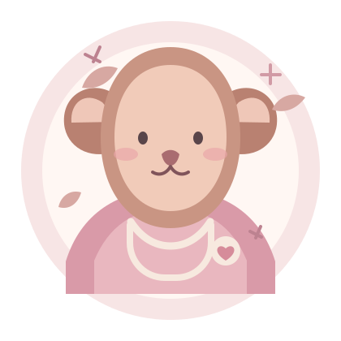

Puericultura
Acompanhamento preventivo do crescimento, da saúde e das necessidades de cada fase da infância.
Cuidado que cresce junto
Cada infância merece atenção, escuta e muito carinho. Um espaço pensado para acompanhar o crescimento saudável de cada criança e acolher quem cuida dela.


Um olhar atento para cada pequeno grande começo.
Um pouquinho sobre mim
Olá, sou a Dra. Maria Luiza. Acredito que o cuidado pediátrico vai além da consulta: ele nasce da escuta, do vínculo com a família e do respeito ao tempo de cada criança.
Cuidado em cada etapa
Saúde infantil com carinho, orientação e respeito à individualidade de cada criança.
Acompanhamento preventivo do crescimento, da saúde e das necessidades de cada fase da infância.
Observação cuidadosa das conquistas e do desenvolvimento físico, emocional e social.
Informação e cuidados preventivos para apoiar uma infância com mais saúde e bem-estar.
Como posso ajudar
Um espaço acolhedor para conversar, tirar dúvidas e cuidar de quem mais importa.
Um momento de escuta e atenção para conhecer a criança, conversar com a família e cuidar da saúde.
Orientação ao longo das fases do crescimento, valorizando cada conquista e necessidade individual.
Informações claras e acolhedoras para apoiar quem cuida nas dúvidas e descobertas do cotidiano.
Um carinho em forma de informação
Rituais tranquilos e horários consistentes podem ajudar a criança a se preparar para dormir.
Oferecer alimentos variados com paciência e tornar as refeições momentos agradáveis faz diferença.
Brincar, conversar e explorar o mundo são oportunidades cotidianas de aprender e se desenvolver.
Conteúdo informativo e demonstrativo. Dúvidas sobre a saúde da criança devem ser conversadas com um profissional de saúde.
Vamos conversar?
Tem uma dúvida ou quer saber mais? Entre em contato. Será um prazer acolher você e sua família.
Conversar pelo WhatsAppLink demonstrativo: configure o número em js/script.js.